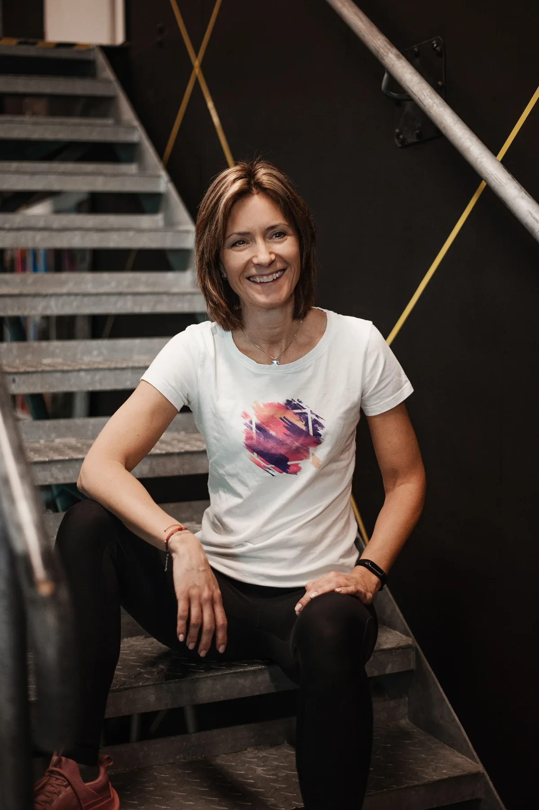
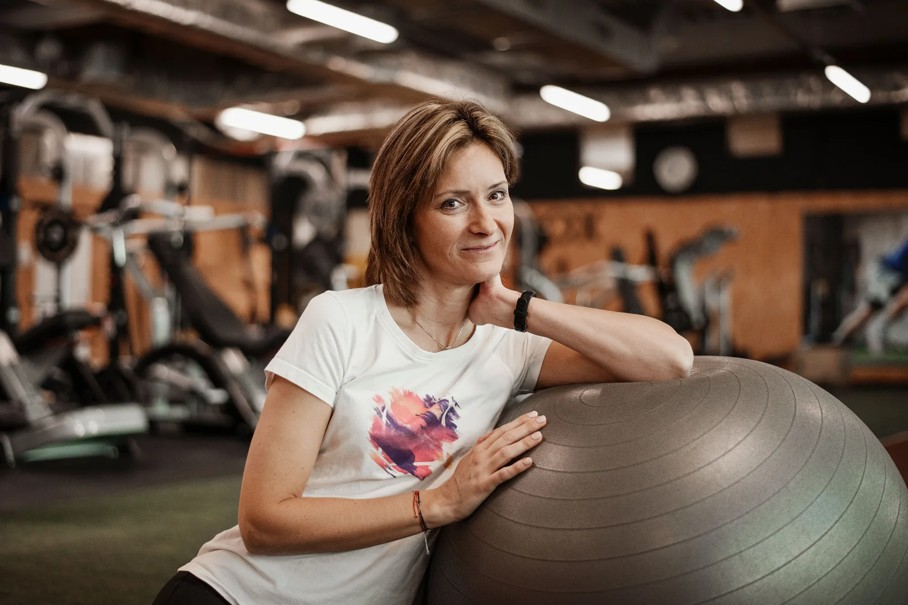
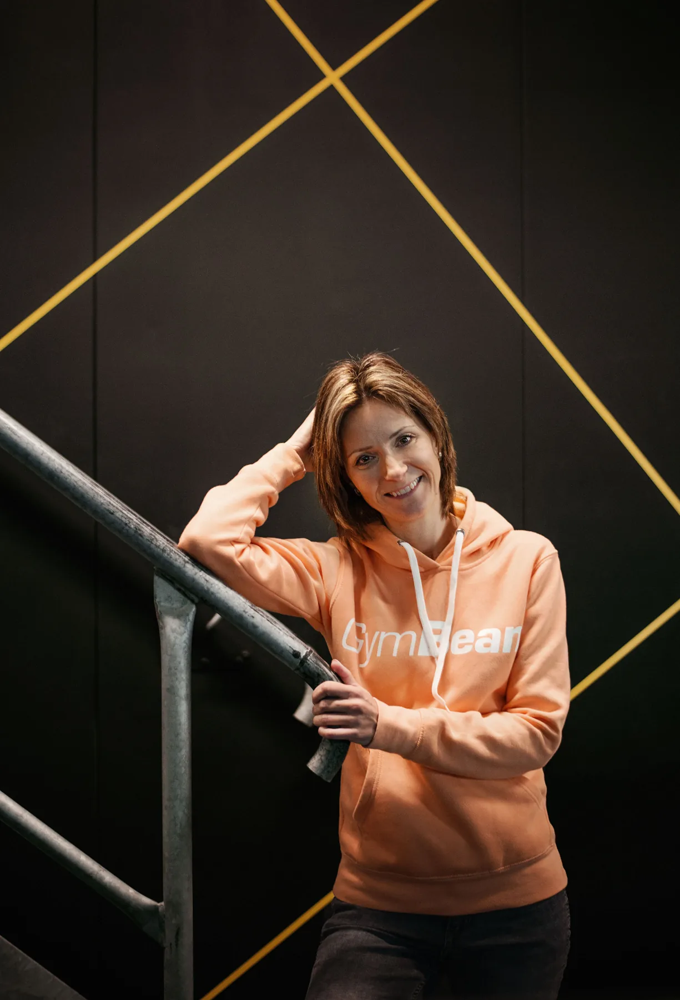
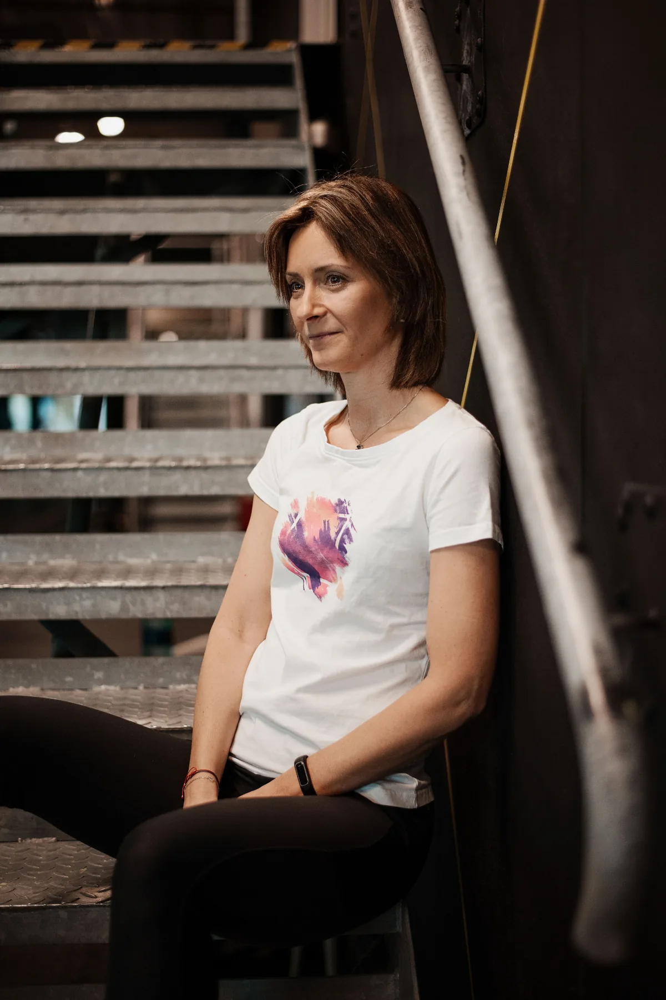

Osobní trénink zaměřený na kondici, sílu a zdravý pohyb. Osobním tréninkům se věnuji od roku 2003.
Domluvit osobní trénink
Pohyb je součástí mého života i práce. Osobním tréninkům se věnuji od roku 2003 a pracuji s lidmi s různými cíli, zkušenostmi a pohybovými možnostmi.
Vystudovala jsem střední a vyšší odbornou zdravotnickou školu v oboru Diplomovaná všeobecná sestra. Zdravotnické vzdělání propojuji s praktickými zkušenostmi z fitness.
Společně nastavíme cvičení podle vašich cílů, zkušeností a aktuálních možností. Ať chcete zlepšit kondici, posílit svaly, začít pravidelně cvičit nebo se vrátit k pohybu.

Výběr a provedení cviků, série, opakování a zátěž, rozvržení tréninků během týdne a zohlednění vašich pohybových možností a kondice.
Návrh podle vašeho cíle, běžného režimu, stravovacích zvyklostí, časových možností a preferencí.


Chcete začít cvičit, zlepšit kondici nebo sestavit tréninkový plán? Napište mi nebo zavolejte.
Daniela Mlchová, DiS.
Osobní trenérka se zdravotnickým vzděláním
+420 603 342 007
trener@daniela-fitness.cz
Instagram: @daniela.mlchova.fitness
Form Factory Zličín · Praha 5 – Zličín
Space Gym Ruzyně · Praha 6 – Ruzyně